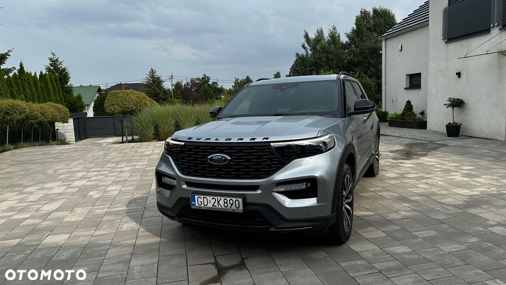
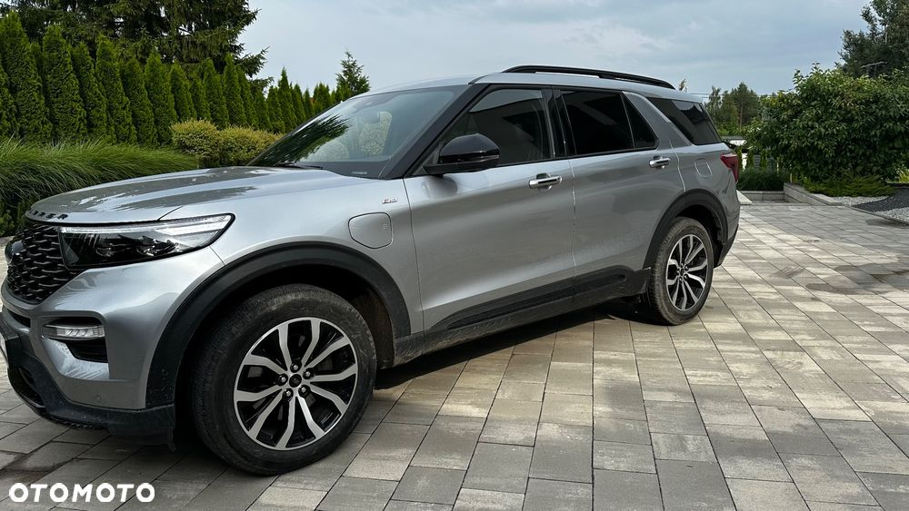
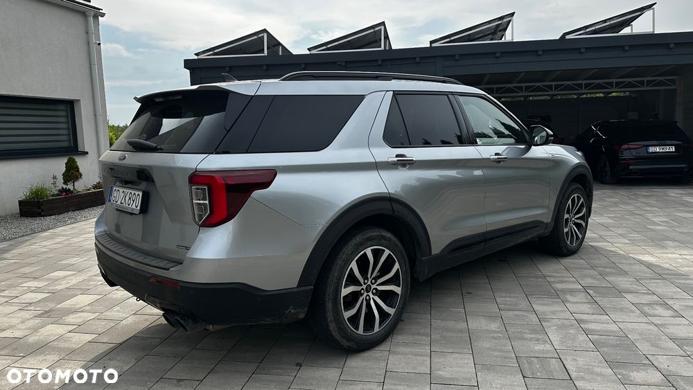
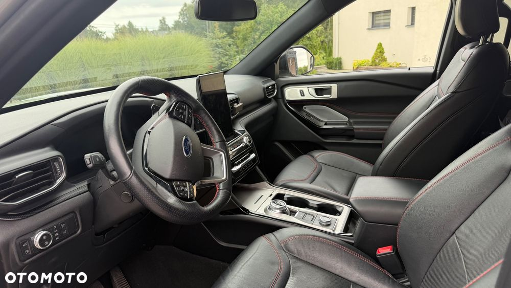
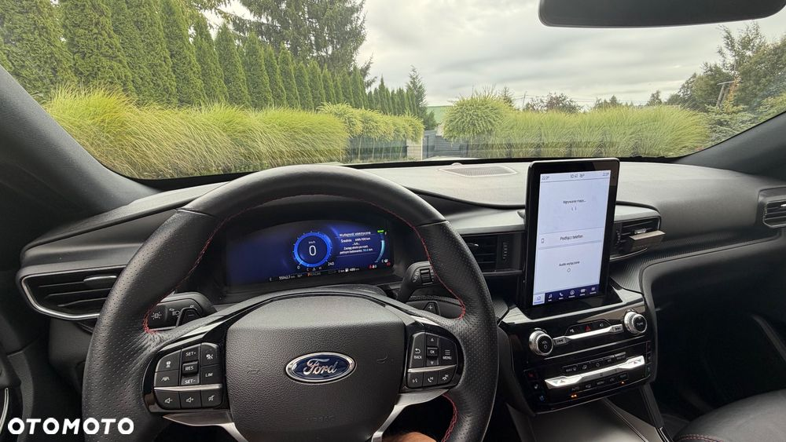
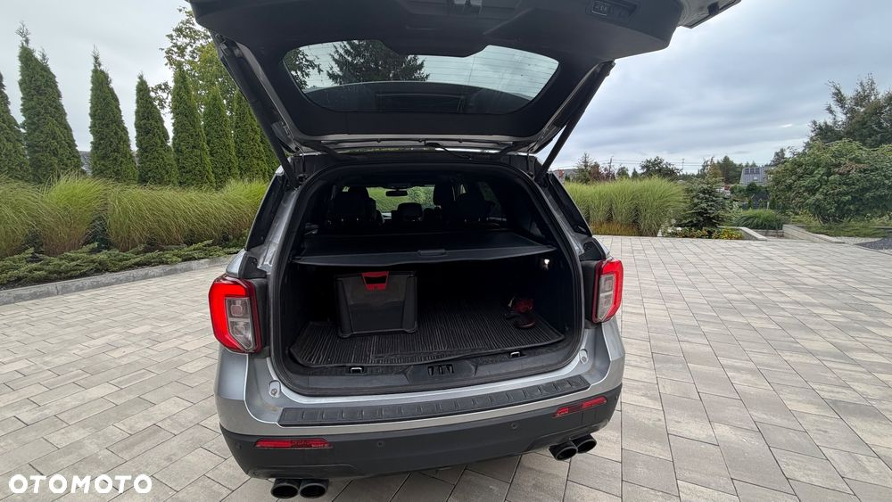

Wydech sportowy Borla - dźwięk jak 6.2 HEMI co podniosło moc do 480 km w stosunku do serii. Zainteresowanej osobie mogę przesłać film, w którym można posłuchać jak pięknie brzmi wydech. Cały oklejony folią PPF CarbonQ w cenie 26000 pln.
Rata 6090 pln brutto. Spłacone 180000 pln z wyjściowych 420000 pln. Pozostało do spłaty 243960 pln brutto - to cały koszt finansowania.
FORD EXPLORER – Nowoczesny i przestronny SUV z 2022 roku w wersji ver-3-0-ecoboost-phev-4wd-st--line. Auto z napędem na cztery koła, hybrydowy plug-in, idealny dla wymagających kierowców oraz rodzin poszukujących komfortu, bezpieczeństwa i najnowszych technologii. Przebieg: 55 000 km. 7 miejsc siedzących.





